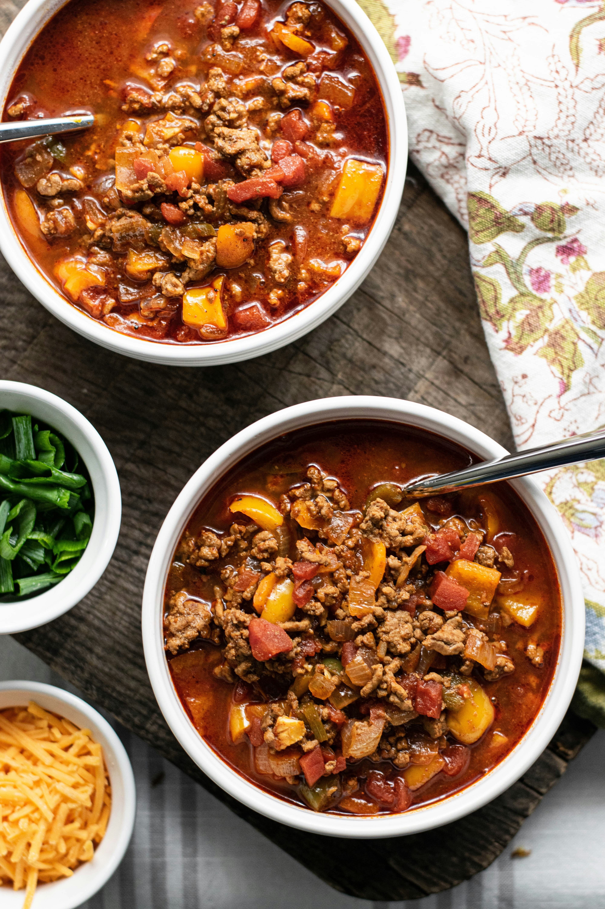

Chapati
Home

Description
Beef Stew is a rich and hearty dish commonly enjoyed in many Kenyan households. It is made by slowly simmering
tender pieces of beef with onions, tomatoes, garlic, and a blend of simple spices until the meat becomes soft
and the sauce thick and flavorful. The slow cooking process allows the ingredients to blend perfectly, creating
a comforting meal with deep, savory flavors.
In Kenya, beef stew is a versatile dish often served with staples such as rice, ugali, or chapati. It is popular
for both everyday meals and special family gatherings because it is filling, nutritious, and easy to prepare
with basic ingredients. The thick, tomato-based gravy makes it especially satisfying when paired with freshly
cooked chapatis or pilau.
Ingredients
- 1 tablespoon butter
- 1 pound beef chuck, cut into 1-inch cubes
- 4 Yukon Gold potatoes, cubed
- 1 ½ cups mushrooms, halved
- 1 onion, cut into 6 wedges
- 2 carrots, cut into 1/2-inch thick slices
- 2 cloves garlic, minced
- 3 cups beef broth
- 1 tablespoon Worcestershire sauce
- 1 tablespoon tomato paste
- 1 teaspoon salt
- ½ teaspoon ground black pepper
- ½ teaspoon dried rosemary
Steps
- Gather all ingredients.
- Turn on a multi-functional pressure cooker (such as Instant Pot) and select the Sauté function. Melt butter
in the pot. Cook beef chuck cubes in batches until browned on all sides, about 5 minutes per batch.
- Return all beef chuck cubes to the pot. Add potatoes, mushrooms, onion, carrots, and garlic; cover with beef
broth. Stir in Worcestershire sauce, tomato paste, salt, pepper, and rosemary.
- Close and lock the lid. Select Meat/Stew function, according to the manufacturer's instructions; set the
timer for 35 minutes. Allow 10 to 15 minutes for pressure to build.
- Release pressure using the natural-release method, according to the manufacturer's instructions, 10 to 40
minutes. Unlock and remove the lid.